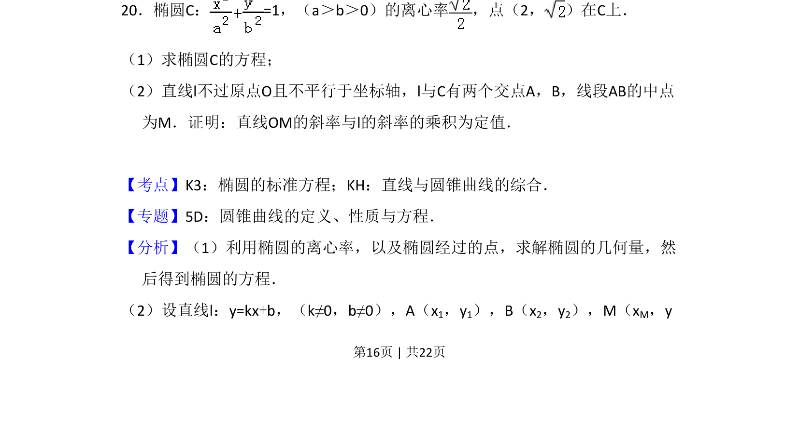
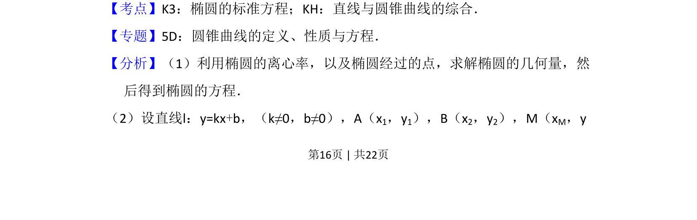
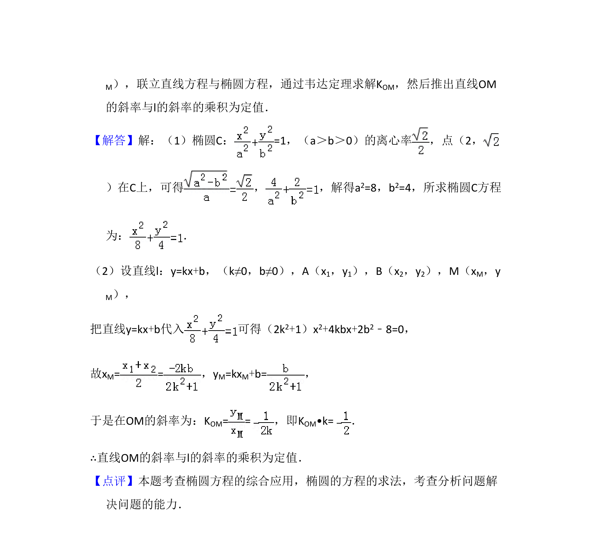

考点：椭圆标准方程 直线与椭圆的位置关系 中点弦 定值问题

已知椭圆离心率和一点求标准方程，并证明中点弦斜率乘积为定值


📄 原 PDF 第 16 页：
素材/真题/吉林/2008-2024·（吉林）数学高考真题/2015年高考数学试卷（文）（新课标Ⅱ）（解析卷）.pdf
20．椭圆C：=1，（a＞b＞0）的离心率 ，点（2， ）在C上． （1）求椭圆C的方程； （2）直线l不过原点O且不平行于坐标轴，l与C有两个交点A，B，线段AB的中点 为M．证明：直线OM的斜率与l的斜率的乘积为定值．
【考点】K3：椭圆的标准方程；KH：直线与圆锥曲线的综合．菁优网版权所有 【专题】5D：圆锥曲线的定义、性质与方程． 【分析】（1）利用椭圆的离心率，以及椭圆经过的点，求解椭圆的几何量，然 后得到椭圆的方程． （2）设直线l：y=kx+b，（k≠0，b≠0），A（x1，y1），B（x2，y2），M（xM，y